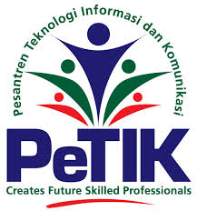

AL- QUR'AN
MARI JADI BAGIAN DARI PROGRAM PEMBERANTASAN BUTA HURUF AL-QUR'AN DI INDONESIA
Hasil riset dari Arrahman Quranic Islam Learning Center pada tahun 2012 menyebutkan bahwa 85% masyarakat Indonesia masih belum mempunyai Al-Qur'an, itu artinya hanya 15% yang mempunyai Al-Qur'an. Maka dari itu, Syaamil Quran melalui program Syaamil Berbagi mengajak sahabat sekalian untuk bersama-sama ambil bagian dalam program yang mulia ini. Dengan memiliki Al-Qur'an terbitan Syaamil Quran bertanda khusus, Anda telah ikut berkontribusi dalam Program Pemberantasan Buta Huruf Al-Qur'an di Indonesia.Al-Qur'an bertanda khusus bisa didapatkan melalui toko buku, agen dan reseller Syaamil Quran yang terdekat di kota Anda.Melalui program Syaamil Berbagi ini, Syaamil Quran akan mendonasikan sebagian keuntungan dari penjualan produk, untuk pemberantasan buta huruf Al-Qur'an di Indonesia